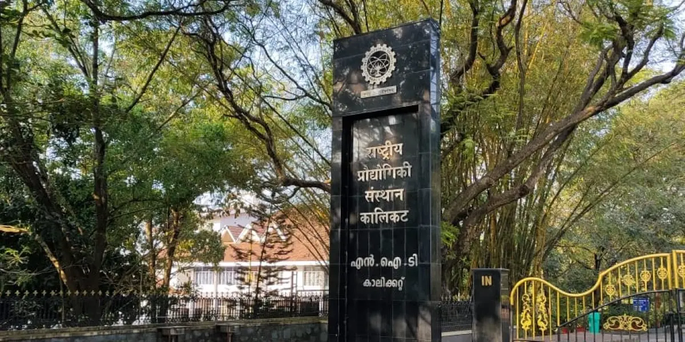
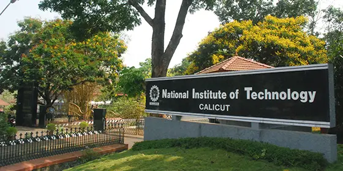
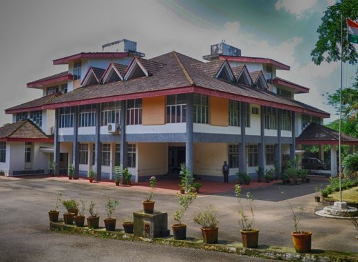
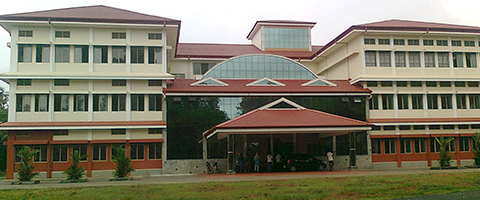

National Institute of Technology Calicut (NITC) is one of the 31 institutions of national importance set up by an Act of Parliament namely the ‘National Institute of technology Act 2007’, and is fully funded by the Government of India. The mandate of the Institute is to provide higher technical education and conduct research in the various branches of Engineering, Science, Technology and Management. Originally established in 1961 as a Regional Engineering College (REC), it was transformed into a National Institute of Technology in 2002. The Institute offers bachelors, masters and doctoral degree programs in Engineering, Science, Technology and Management. With its proactive collaborations with a multitude of research organizations, academic institutions and industries, the institute has set a new style for its functioning under the NIT regime. 
Set in a picturesque landscape at the foothills of the Western Ghats, NIT Calicut is located about 22 kilometres north-east of Calicut city in the state of Kerala, India. It stretches over a length of about 1.5 kilometres along the Calicut-Mukkam road, extending over an area of approximately 120 hectares. Calicut, also known as Kozhikode, located in the Malabar region of Kerala State, found a place in world history with the discovery of a sea route to India in 1498 by the Portuguese navigator Vasco Da Gama. Basking in the idyllic setting of the Arabian Sea on the west and the proud peaks of the Wayanad hills on the east, Calicut is known for its serene beaches, lush green countryside, historic sites, calm backwaters, wildlife sanctuaries, rivers and waterfalls.
a fully residential institution, the campus houses academic buildings, research labs, hostels, residences and other amenities among its infrastructure. The Institute is presently offering 11 UG programmes and 29 PG programmes including MBA. Doctoral level research has remarkably increased in recent times with a substantial increase in the volume of research papers and patents produced.
 Many transformations in academic institutions become imperative for embracing the changes that happen by the rule of the nature and also for absorbing the results of the pursuits of the humanity in the areas of knowledge and skill. The case of converting the premier Regional Engineering Colleges (RECs) to the new brand of institutions of national importance was with such a purpose. The enactment of the NIT Act in 2007 has fuelled the growth of the new line of institutions of national importance named as National Institutes of Technology (NITs) and are being built to improve the social equity in high quality education in science, technology, engineering and management. The primary purpose of national integration envisaged for the RECs has been upheld in the formation of NITs too, but a new focus of research was added to the mandate.
Originally established in 1961 as a Regional Engineering College (REC), National Institute of Technology Calicut has begun its triumphant journey with a new spirit in 2002, with the new name and a fresh mandate. This had helped the institute in broadening the spectrum of services to the humanity; Institute now offers Bachelors, Masters and Doctoral degree programmes in Engineering, Science, Technology and Management.
The region of Malabar that hosts the Institute is the northern part of the State of Kerala and is a destination for ecotourism. The region is fast developing and is vibrant in all spheres of human life; there is no smoke and choke of heavy industries. Local business, small scale industries and the overseas jobs of the local population combined with the revolutionary practices of land reforms have resulted in a uniform distribution of development across the region. Perhaps, the entire State of Kerala has the advantage of these enabling factors. This development has helped in removing the disparities between city and the rural region. The threat of global warming could not yet steal the natural beauty of the landscape. Anyone can enjoy this from the pinnacles of the hills that mark the undulating topography. Malabar is historically known for the spices and the trading with the Middle East. As an institution of higher education and research, NIT Calicut cannot alienate itself from this growth pattern but has taken the lead in the regional development through many proactive measures as a friend, philosopher and guide. Faculty is posed with many challenges because of the princely treatment the institution gets from the public. So, the infrastructure for testing, research and development is undergoing continuous improvement.
Redefining the goals and putting thrust on socially relevant subjects has enabled the Institute to produce ready-to-employ graduates and the value added research outputs with sustained quality and excellence. Notwithstanding the challenges that get opened up in terms resource crunch, lukewarm industrial supports, the institute is marching ahead and has marked its position as the 23rd one among technical institutions and second in the area of architecture since the year 2020. Campus is catering to the 6500 strong student population with a variety of services and state of the art education. Our roadmap is to reach the top and work with the best in the class institutions that are globally well known. We believe that excellence is a journey and not a destination.
Institute is indebted to the Government of India, Ministry of Education, Kerala State Government, the local administration, industries, funding agencies, alumni and all other stakeholders for the grand support in its march towards excellence.

Department of Architecture and Planning
The Department of Architecture and Planning is committed to provide an academically strong platform for those aspirants who would make a good meatier and leave an enduring impression in the field of Architecture and Urban Planning.
The educational program in Architecture throughout the world shares a common view of the future of mankind and recognizes its unpredictability. This calls for an attitude for research, exploration and evaluation to authenticate the work of design. Great are the thoughts that moved the world... greater are the perpetuators of these thoughts. The Department of Architecture and Planning plans and strives to reach these goals by offering the Undergraduate (5 Year B.Arch.) Degree Program in Architecture.
The Post Graduate Degree (2 Year M. Plan) Program in Urban Planning aims to produce generalist planning professionals of international quality who can adapt to any challenging planning situation with superior capability to use geo-informatics which includes GIS, remote sensing, related models and quantitative methods in urban, regional and environmental planning. The program envisages inculcating scientific diagnostic and urban management abilities in professional planners to understand planning issues holistically and equip them with predictive ability to analyze the outcome of economic, social, environment and energy impacts using simulation of future scenarios.